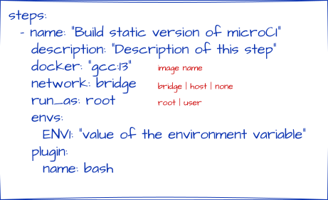

Plugin bash

Objective
Execute custom shell commands inside a specified Docker container.
Why
In modern Continuous Integration, environment consistency, isolation, and portability are foundational. Running custom shell commands inside ephemeral Docker containers decouples pipeline logic from host infrastructure, ensuring that every build, test, and deployment step executes in a deterministic, reproducible runtime. This pattern solves the classic "works on my machine" problem, enables horizontal scaling across runners, and allows CI pipelines to support arbitrary toolchains without modifying the underlying host.
✅ Pros
| Advantage | Explanation |
|---|---|
| Reproducibility | Pins OS, compilers, libraries, and system dependencies to exact versions. Eliminates environment drift across developers and runners. |
| Strict Isolation | Each step runs in a sandboxed namespace. Cross-step pollution, leftover artifacts, or conflicting dependencies are prevented. |
| Portability | The same pipeline executes identically on local workstations, on-prem runners, and cloud CI without host-specific configuration. |
| Flexibility | Bypasses native CI platform limitations. Supports any language, custom build system, or third-party tool without host modification. |
| Ephemeral & Clean State | Guarantees a fresh environment per run. No stale caches, orphaned processes, or permission leaks from previous jobs. |
| Security Boundaries | Can enforce non-root execution, restrict network access (bridge/host/none), and limit device mounts to reduce attack surface. |
❌ Cons
| Drawback | Explanation |
|---|---|
| Latency & Resource Overhead | Image pulls, container startup/shutdown, and volume mounts add seconds to minutes per step and consume disk/RAM on runners. |
| Maintenance Burden | Requires managing base image versions, updating dependencies, patching CVEs, and storing/mirroring images in registries. |
| Debugging Complexity | File paths, permissions, DNS, and network interfaces differ between host and container. Errors can be harder to trace without proper logging. |
| Performance Bottlenecks | Heavy I/O (compilation, static analysis, test suites) suffers from container filesystem volume overhead compared to native host execution. |
| Security Risks if Misconfigured | Running as root, mounting sensitive host paths, or exposing unnecessary ports can lead to privilege escalation or data leakage. |
| Image Bloat | Overly large base images increase pull times, storage costs, and attack surface. Poorly optimized Dockerfiles waste CI runner resources. |
Test 01 - executing as regular user
steps:
- name: "Test bash script 01"
docker: "debian:stable-slim"
plugin:
name: bash
bash: |
echo 'AAA' > file.txt
echo 'BBB' >> file.txt
cat /etc/issue.net >> file.txt
ls -l /microci_workspace >> file.txt
Execution
$ microCI | bash
┏━━━━━━━━━━━━━━━━━━━━━━━━━━━━━━━━━━━━━━━━━━━━━━━━━━━━━━━━━━━━━━━━━━━━┓
┃ ┃
┃ ░░░░░░░░░░░░░░░░░ ┃
┃ ░░░░░░░█▀▀░▀█▀░░░ ┃
┃ ░░░█░█░█░░░░█░░░░ ┃
┃ ░░░█▀▀░▀▀▀░▀▀▀░░░ ┃
┃ ░░░▀░░░░░░░░░░░░░ ┃
┃ ░░░░░░░░░░░░░░░░░ ┃
┃ microCI v0.43.0 ┃
┃ ┃
┗━━━━━━━━━━━━━━━━━━━━━━━━━━━━━━━━━━━━━━━━━━━━━━━━━━━━━━━━━━━━━━━━━━━━┛
Updating docker images...
1 Test bash script 01.......................................: OK
Result
$ cat file.txt
AAA
BBB
Debian GNU/Linux 13
total 8
-rw-rw-r-- 1 1000 1000 21 May 27 17:40 Makefile
-rw-r--r-- 1 1000 1000 28 May 27 17:42 file.txt
Test 02 - try to execute admin commands as user
This is a test to show how microCI protects against privilege escalation.
steps:
- name: "Test bash script 02"
docker: "debian:stable-slim"
plugin:
name: bash
bash: |
apt update
apt install -y libspdlog-dev
Execution
$ microCI | bash
┏━━━━━━━━━━━━━━━━━━━━━━━━━━━━━━━━━━━━━━━━━━━━━━━━━━━━━━━━━━━━━━━━━━━━┓
┃ ┃
┃ ░░░░░░░░░░░░░░░░░ ┃
┃ ░░░░░░░█▀▀░▀█▀░░░ ┃
┃ ░░░█░█░█░░░░█░░░░ ┃
┃ ░░░█▀▀░▀▀▀░▀▀▀░░░ ┃
┃ ░░░▀░░░░░░░░░░░░░ ┃
┃ ░░░░░░░░░░░░░░░░░ ┃
┃ microCI v0.43.0 ┃
┃ ┃
┗━━━━━━━━━━━━━━━━━━━━━━━━━━━━━━━━━━━━━━━━━━━━━━━━━━━━━━━━━━━━━━━━━━━━┛
Updating docker images...
1 Test bash script 02.......................................: FAILED
See the complete log at .microCI.log
Failed as expected! Check file .microCI.log for the error cause:
$ tail .microCI.log
Step: Test bash script 02
WARNING: apt does not have a stable CLI interface. Use with caution in scripts.
Reading package lists...
Error: List directory /var/lib/apt/lists/partial is missing. - Acquire (13: Permission denied)
Status: 100
Duration: 0
Regular user is denied to execute admin commands.
Test 03 - try to execute network dependent commands
This is a test to show how microCI protects against access network resources.
steps:
- name: "Test bash script 03"
docker: "debian:stable-slim"
run_as: root
plugin:
name: bash
bash: |
apt update
apt install -y libspdlog-dev
Execution
$ microCI | bash
┏━━━━━━━━━━━━━━━━━━━━━━━━━━━━━━━━━━━━━━━━━━━━━━━━━━━━━━━━━━━━━━━━━━━━┓
┃ ┃
┃ ░░░░░░░░░░░░░░░░░ ┃
┃ ░░░░░░░█▀▀░▀█▀░░░ ┃
┃ ░░░█░█░█░░░░█░░░░ ┃
┃ ░░░█▀▀░▀▀▀░▀▀▀░░░ ┃
┃ ░░░▀░░░░░░░░░░░░░ ┃
┃ ░░░░░░░░░░░░░░░░░ ┃
┃ microCI v0.43.0 ┃
┃ ┃
┗━━━━━━━━━━━━━━━━━━━━━━━━━━━━━━━━━━━━━━━━━━━━━━━━━━━━━━━━━━━━━━━━━━━━┛
Updating docker images...
1 Test bash script 03.......................................: FAILED
See the complete log at .microCI.log
Failed as expected! Check file .microCI.log for the error cause:
Ign:3 http://deb.debian.org/debian-security stable-security InRelease
Err:3 http://deb.debian.org/debian-security stable-security InRelease
Temporary failure resolving 'deb.debian.org'
Err:2 http://deb.debian.org/debian stable-updates InRelease
Temporary failure resolving 'deb.debian.org'
Err:1 http://deb.debian.org/debian stable InRelease
Temporary failure resolving 'deb.debian.org'
Reading package lists...
Building dependency tree...
Reading state information...
All packages are up to date.
Warning: Failed to fetch http://deb.debian.org/debian/dists/stable/InRelease Temporary failure resolving 'deb.debian.org'
Warning: Failed to fetch http://deb.debian.org/debian/dists/stable-updates/InRelease Temporary failure resolving 'deb.debian.org'
Warning: Failed to fetch http://deb.debian.org/debian-security/dists/stable-security/InRelease Temporary failure resolving 'deb.debian.org'
Warning: Some index files failed to download. They have been ignored, or old ones used instead.
WARNING: apt does not have a stable CLI interface. Use with caution in scripts.
Reading package lists...
Building dependency tree...
Reading state information...
Error: Unable to locate package libspdlog-dev
Status: 100
Duration: 0
Network access not allowed by default.
Test 04 - Execute as root with network access
steps:
- name: "Test bash script 04"
docker: "debian:stable-slim"
run_as: root
network: bridge
plugin:
name: bash
bash: |
apt update
apt install -y libspdlog-dev
Execution
microCI | bash
┏━━━━━━━━━━━━━━━━━━━━━━━━━━━━━━━━━━━━━━━━━━━━━━━━━━━━━━━━━━━━━━━━━━━━┓
┃ ┃
┃ ░░░░░░░░░░░░░░░░░ ┃
┃ ░░░░░░░█▀▀░▀█▀░░░ ┃
┃ ░░░█░█░█░░░░█░░░░ ┃
┃ ░░░█▀▀░▀▀▀░▀▀▀░░░ ┃
┃ ░░░▀░░░░░░░░░░░░░ ┃
┃ ░░░░░░░░░░░░░░░░░ ┃
┃ microCI v0.43.0 ┃
┃ ┃
┗━━━━━━━━━━━━━━━━━━━━━━━━━━━━━━━━━━━━━━━━━━━━━━━━━━━━━━━━━━━━━━━━━━━━┛
Updating docker images...
1 Test bash script 04.......................................: OK